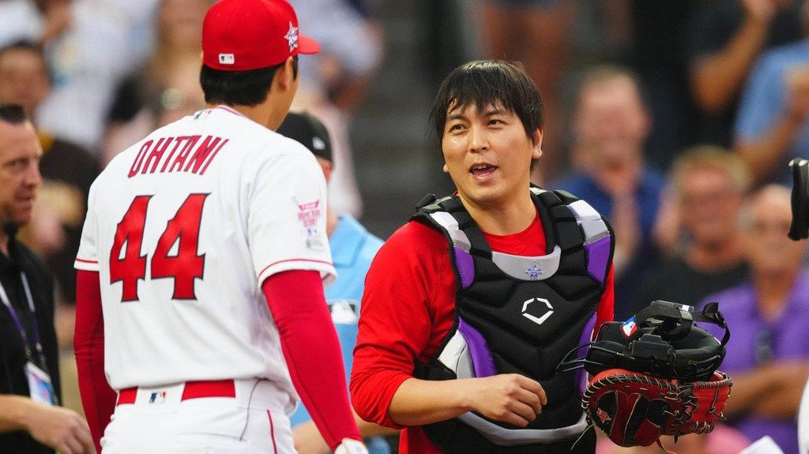

“Well, back in the 70s and 80s I wish I’d had an interpreter. I’d be scot-free.” - Pete Rose
He’s referring to the gambling scandal that exploded last month around Japanese two-way phenom Shohei Ohtani, suggesting the slugger/ace was placing illegal bets with a bookie in California. And that, because he “had an interpreter”—his longtime friend and wingman, Ippei Mizuhara—he was able to wriggle off the hook.
Baseball has set down several bright lines around gambling; to keep the sport away from nefarious characters and organized crime: no bookies or other illegal gambling. (This seems largely moot now that people in 38 states can make bets on their phones and MLB has a contract with FanDuel, but Mizuhara managed to place bets in California, where gambling is still banned.) After the catastrophe of the 1919 Black Sox scandal, clear boundaries were set around betting on baseball. A bet on any game—minor league, college softball, maybe even little league?—could get you a one-year suspension. Your own games? You were banned for life.
Rose, a lifetime gambler and longtime scofflaw of the associating-with-illegal-bookies part of the rulebook, was found to have bet on his own Cincinnati Reds late in his career. For the illegal gambling part he was sent to jail (five months for two counts of filing false income tax returns); for betting on his team, MLB banned him for life.
While he didn’t have much left in the tank in terms of professional play (at that point he was a player-coach in his forties), he also was banned from consideration for election to the Baseball Hall of Fame. It’s hard enough to get into the Hall—it requires 75 percent of voting sportswriters from Baseball Writers’ Association of America to give you the thumbs up—but he was banned from even appearing on the ballot. Rose has spent the last thirty-some years trying to get that decision reversed.
The dimensions of the Ohtani scandal are being sorted—MLB and the feds have tight-lipped investigations underway—but the basics are that his personal interpreter Ippei Mizuhara managed to rack up a purported $4.5 million of gambling debt with an illegal sports bookie in California, and Ohtani made a wire transfer to that man to cover the losses. The complicated, potentially damning situation was made more slippery as the particulars changed again and again: At first Mizuhara said Ohtani had willingly paid off his debts with the transfer; it was a friend helping a friend situation (and Ohtani did not trust Mizuhara, who claimed he bet on soccer, the NBA, NFL, and college basketball, but never baseball, to handle the money himself).
Within hours, the story changed; Mizuhara recanted the helping-hand narrative and said Ohtani didn’t know about the bets; he just sent money from his account. Then Ohtani’s people said he didn’t know about the transfer; what Mizuhara had done was major theft. The sports world got dizzy trying to keep it all straight; it wasn’t helping anything that Ohtani couldn’t answer the English-language press directly.
Was it deception or outright theft or was Mizuhara taking the fall for a player too big to fail? Did Ohtani commit a crime or was his trespass being disorganized with his accounts (he has a $700 million contract with the Dodgers, after all; maybe low-seven figures felt like a drop in the bucket?) or was he only guilty of being too trusting of his long-time translator and friend?
In rooms where nearly no one could do what Mizuhara did—understand both sides of the conversation—the fealty and potential consequence of his interpretation of the situation (and everything else) was quickly thrown into doubt. Had he fully conveyed what Ohtani said on other occasions? Was he giving Ohtani complete information when he translated English information into Japanese? Who is telling—and translating—the truth? (Mizuhara claims he never misled Ohtani with interpreting… just stole a lot of cash.)
There’s a telling account of the Dodgers team meeting that took place—in English—just after the Mizuhara news broke. Ohtani was without a translator but could, he later said, sense something was wrong—even via general vibes he received a more accurate version of events than what he’d been getting from Mizuhara.
And it took little time for Dodgers manager Dave Roberts to start throwing shade in the interpreter’s direction; he called Mizuhara, who was known to not only translate for Ohtani but also carry his backpack and water bottle, a “buffer,” and not in a good way: he was physically and linguistically standing between the Dodgers and their new, most valuable asset. Could it be that Mizuhara was acting as protector and quietly wrecking him, all at once?
Mizuhara’s sudden import was certainly a change of circumstance for interpreters in the MLB. Consider, for a moment, the history of interpreters in the sport. It was only a decade ago, largely because of the arrival of another Japanese pitching phenom, Yu Darvish, that MLB changed the rules so that interpreters were allowed not just at press conferences and in the clubhouse, but to join for mound visits.
While it seems obvious and vital that communication be clear in these critical midgame moments—pitchers get mound visits when they’re flagging or otherwise have fucked up and need to talk strategy—for decades foreign-born players made do without. This has something to do with shifting demographics of foreign-born athletes: historically, Spanish-speaking players came to the league as underpaid teens and worked their way up, whereas many of the recent big-name Japanese players transferred into the league after they were already stars at home.
Keith O’Brien talks about this briefly in his new Pete Rose biography, Charlie Hustle (and how convenient that, at the same moment that MLB has to take a hard look at how they enforce their gambling rules, a fairly celebratory portrait of the league’s greatest hitter/worst gambler comes out). Rose came up through the Reds farm system with Cuban-born Tony Perez. During that first minor-league season in Geneva, New York, according to O’Brien, only one of the future All-Star infielders was advocating for himself… because only Rose could communicate.
In Perez’s Hall of Fame webpage (he was inducted in 2000), he speaks of the language barrier during his first season: “I ate chicken for a week one time…. It was the only word I knew—chicken, chicken, chicken.” He certainly didn’t have the convenience of a bilingual valet and body man. (There’s an essay to be written about inequitable distribution of resources among international players; I’ll save that for another day, but share one telling datapoint: it was only in 2016 that MLB required every team have a year-round translator for their Spanish-speaking athletes.)
Clearly we’ve reached a new standing for translation in baseball. Needs that had been discounted for decades are now considered required infrastructure; the fate of a generational talent is tied up with the (mis)performance of his translator. Everyone wants to hear from the interpreter—if only they could find him (no one in the press has seen Mizuhara since he was fired in South Korea on March 20).
Look at literature, which is finally acknowledging translators’ importance: in 2015 the Booker International Prize shifted its focus to books in translation; three years later the National Book Awards added a category for translated literature. Both author and translator are feted by these prizes, bringing attention to non-Anglophone literature and the art of transmutation, or something like it (Edith Grossman’s term).
There were campaigns (much needed in our overwhelmingly English-first domestic market) to read translated literature, and before long Booker International Prize-winning translator Jennifer Croft was insisting that publishers put translators on the cover. The campaign got some attention: it was the subject of a New York Times article, and even reached the cultural station of being a Jeopardy clue. That none of the contestants even attempted an answer (“What is: Put translators on the cover?”) was maybe a smidge discouraging for translation advocates, but the groundswell was swole.
Another pro-translator development has been a spate of translators-as-people and compelling protagonists in recent literature. Translators weren’t just vital for communication, the small-egoed “always second fiddle” as Margaret Jull Costa calls it, they were interesting humans! In terms of narrative potential, translators were underdogs or underappreciated, though, in their multilingualism, potentially smarter than most people in any given room. What might they do with that power, the agency and potential of having the upper-hand on the neck of that second fiddle? (For Michael Hofmann, the project of translation is “to eclipse the original. It’s like putting the tombstone over a corpse or something. Whatever it is, you bury it.”)
Of course, centering the uncentered but vital role of the translator for the sake of story is not new. Cesar Aira and Samuel Delaney famously wrote about translators decades ago; Borges fictionalized someone translating Don Quijote. Audrey Hepburn got in on the action, playing an interpreter in Paris in the 1963 film Charade. And, lest we forget, in Crime and Punishment, ax-wielding Raskolnikov was a sometimes translator, too.
But there are certainly a lot of characters interested in the task of late: Katie Kitamura has written about translators and interpreters;
“[She was interested in how an interpreter] has been trained to think of herself as neutral, as a cog in the machine. But the machine itself isn’t neutral. The institution, its language, none of these things are neutral….Over the course of the novel, she is forced to consider the possibility that [her] position is not especially neutral, and shouldn’t be considered as such,” Katie Kitamura said in her most recent novel, Intimacies.
Idra Novey’s 2016 debut novel, Ways to Disappear, was, according to Novey, a love letter to the “fascinating, reckless adventure of [translation] as I’d experienced it.” And it happened to be another gambling story: when a Brazilian author, deep in debt, goes missing, her translator gets on the next plane from Pittsburgh with hopes of saving the day. Novey wanted to depict “translators as the passionate risk-takers that so many of the translators I know are.” There are enlightened translators, heroic ones, and sometimes they even go devious.
When Croft turned from translation as practice to subject in her novel The Extinction of Irena Rey, not all the bilingual are saints. While the Rey of the title is the award-winning author who has gathered a gaggle of translators to simultaneously translate her latest work, it is the competitive, ambitious, in-fighting translators who drive the story. (No spoilers, but theft and love triangles and locked doors abound.)
In film and TV, there’s similarly been plenty about translators and cross-cultural communication of late. In the critically acclaimed Anatomy of a Fall, translation is a means to additional income for the German-born novelist Sandra, but translation also is a source of strife: between her and her husband, Samuel, both sides of the unhappy couple have to translate their thoughts into a shared third language to communicate.
Each feels disadvantaged by having to shift their ideas from a first language, but at least it is a means of détente… at least until Samuel falls out of the attic window to his death. Suddenly widow, single mother, and prime suspect, Sandra tries to control the narrative via translation. We, and the prosecutor, suspect selective omission, maybe some intentional mis-interpretation of sticky words and phrases.
And when she claims she’s reached the limits of her own capacity for bilingualism—she stops translating herself and switches from French to English—we’re left to wonder, is that true or is it convenient? The translator, meant to be flawless and true in their execution of language across tongues, has a bigger concern than linguistic fealty: self-preservation.
Before I mentioned translation’s exceeding peril, even as the artform gains due prominence. Because, like so many facets of culture that are being reimagined by tech, translation is facing an existential crisis and potential, or partial obsolescence. AI has advanced sufficiently that, as of last fall, podcasts can be translated into different languages and replayed in a deep-fake version of the podcaster’s voice. It seems, to me, both terrifying and very handy that you can listen to the latest Hard Fork in French, but also markedly less scary than Elon Musk’s plans for Neuralink, a computer chip implant company that he says will make human language obsolete in less than a decade (his clock started in 2021).
It’s the middleman, the translator, who doesn’t have as much self-determination in this equation, as reliant as they are on receiving someone else’s words and needing a waiting audience to receive them. The person in the middle is inherently disadvantaged, at least until they step up and speak up, and potentially, go off script.
Mizuhara’s situation is a case in point: only when he began behaving badly, creating rifts in the otherwise seamless, all-but-invisible role of the interpreter, did people start paying attention to him. Whether his attention-seeking actions were intended take down a great ballplayer—or take a fall for him, as Pete Rose suggested—will come out eventually. Because even as audiences think translators are there to serve, translators know better.
“I wanted to show how much power translators have.” - Croft said in Irena Rey